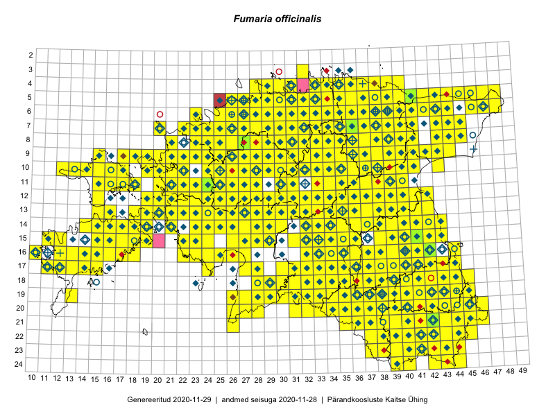

Fumaria officinalis
Uuendatud: 2016-12-02
Kaardile koondatud taksonid: Fumaria officinalis L.

Kaart põhineb 598 kirjel, neist vaatlusi 597 ja eksemplare 1. Taksonit on leitud 395 ruudust.
Kuvatud viited 20 esimesele andmebaasikirjele, ülejäänud PlutoFis
- Tiit Hallikma, Toomas Kukk, Indrek Tammekänd: 2015-06-09: 12-28: ala
- Malle Leht: 2015-07-09: : ala
- Toomas Kukk: 2015-06-23T14:30Z: 21-45: ala
- Thea Kull: 2015-07-07: 16-40: ala
- Rein Kalamees: 2015-06-08: 05-32: ala
- Malle Leht: 2015-08-02: : ala
- Peedu Saar, Toomas Kukk: 2015-05-28: 11-17: ala
- Toomas Kukk, Eerik Leibak: 2015-08-08: 15-18: ala
- Toomas Kukk, Thea Kull, Timo Luhamäe, Ott Luuk, Peedu Saar: 2015-06-28: 13-26: ala
- Toomas Kukk, Eerik Leibak: 2015-08-12: 09-17: ala
- Tiit Hallikma, Indrek Tammekänd, Toomas Kukk: 2015-06-09: 12-29: ala
- Tiit Hallikma, Toomas Kukk: 2015-07-21: 05-45: ala
- Ott Luuk: 2014-07-27: 12-20: GPS punkt
- Ott Luuk: 2014-07-25: 12-19: GPS punkt
- Ott Luuk: 2014-07-24: 12-20: ala
- Ott Luuk, Toivo Sepp: 2015-07-29: 09-31: ala
- Peedu Saar, Ott Luuk: 2015-06-21: 14-41: ala
- Ott Luuk, Peedu Saar: 2015-07-27: 11-35: ala
- Peedu Saar: 2015-07-04: 18-44: ala
- Peedu Saar, Elle Roosaluste: 2015-07-12: 13-20: ala